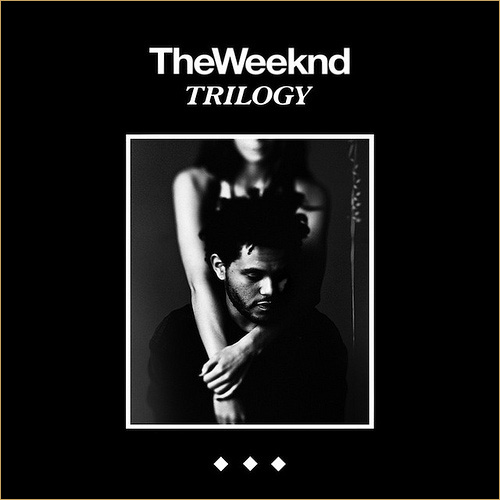
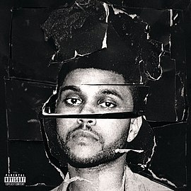
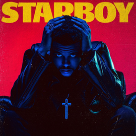
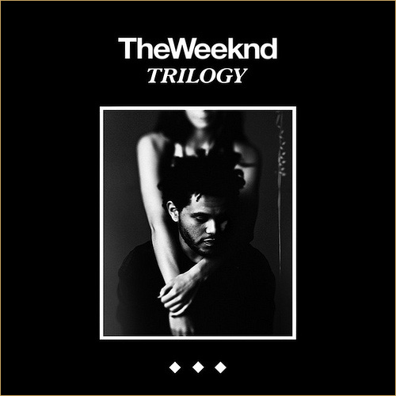
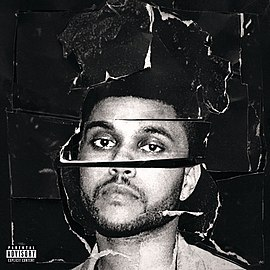
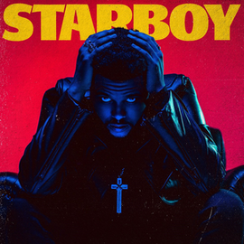

Эйбел Макконен Тесфайе родился 16 февраля 1990 года в Скарборо, Онтарио — районе Торонто. Единственный ребёнок Макконена и Самры Тесфайе, прибывших эфиопскими мигрантами в Канаду в 1980-х. Вырос в Скарборо — сочетающем множество культур районе в городской черте. Эйбел Макконен Тесфайе - профессионально известный как The Weeknd — канадский певец, автор песен и рекорд-продюсер эфиопского происхождения. В конце 2010 года Тесфайе анонимно загрузил несколько песен на YouTube под именем «The Weeknd». Эйбел приводит Майкла Джексона, Принса и Ар Келли как своих основных вдохновителей. Он часто говорит, что это музыка Джексона дала ему желание стать певцом. Он также говорит, что его высокий стиль вокала был вдохновлён певцами хабеша, такими как Aster Awekeruen. Он вырос, слушая различные музыкальные жанры, в том числе соул, куайет-стормruen, хип-хоп, фанк, инди-рок и пост-панк. Песни Тесфайе «построены вокруг затуманенного, сумеречного продакшна, и содержат медленные темпы, урчащий бас и одинокое эхо». Эйбел поёт фальцетом, проявляя просительный и тревожный тон.
My Dear Melancholy, Kiss Land Trilogy Beauty Behind the Madness Starboy
 





MY DEAR MELANCHOLY,
-Call Out My Name
-Try Me
-Wasted Times
-I Was Never There
-Hurt You
KISS LAND
-Professional
-The Town
-Adaptation
-Love In The Sky
-Belong To The World
TROLOGY
-High For This
-What You Need
-House of Ballons
-The Morning
-Wicked Games
BEAUTY BEHIND THE MADNESS
-Real Life
-Losers
-Tell Your Friends
-Often
-The Hills
STARBOY
-Starboy
-False Alarm
-Reminder
-Rockin'
-Secrets